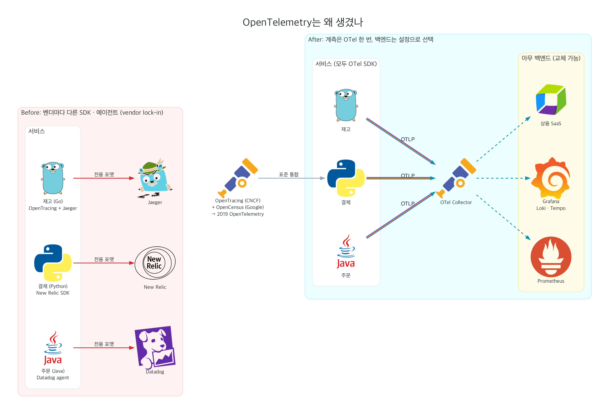
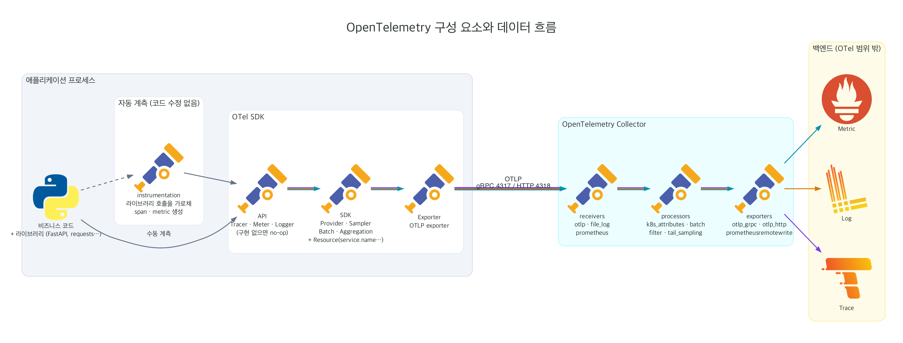
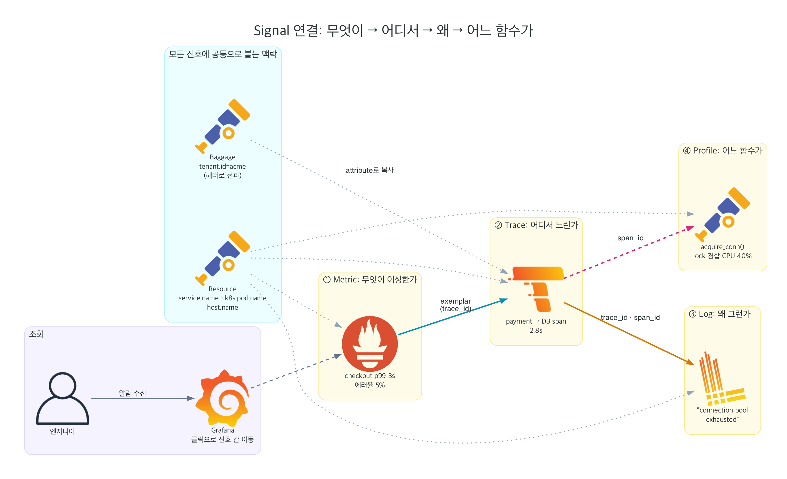
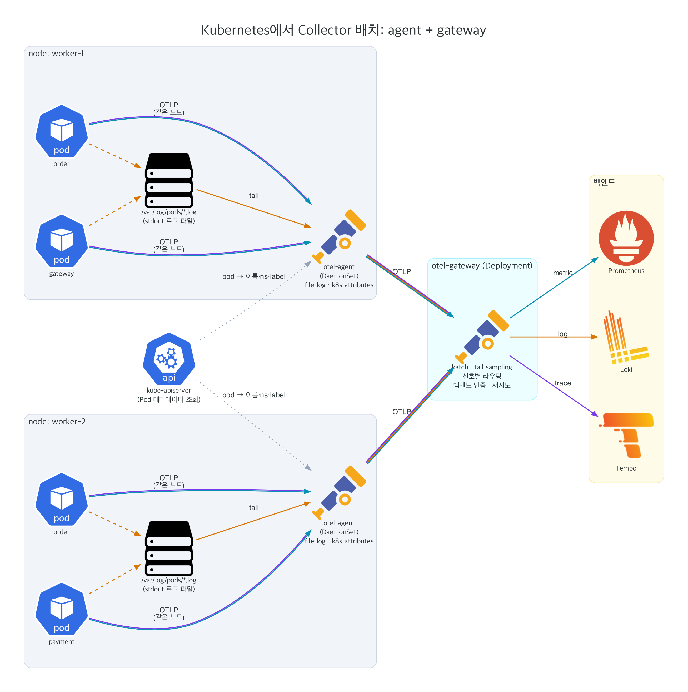
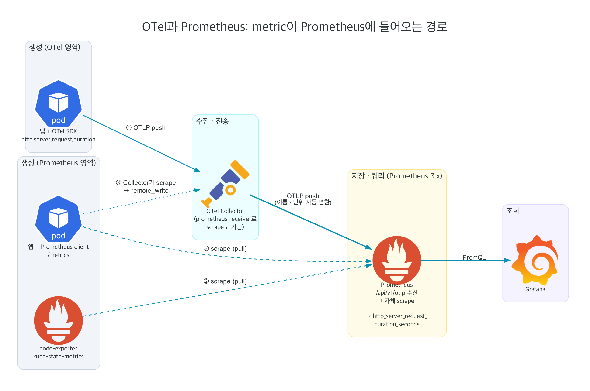

OpenTelemetry란
원문: What is OpenTelemetry? · Observability primer
무엇인가
- 트레이스, 메트릭, 로그 같은 텔레메트리 데이터를 생성하고 내보내고 수집하는 오픈소스 관측 가능성 프레임워크이자 도구 모음입니다.
- 벤더와 도구에 중립적입니다. 오픈소스(Jaeger, Prometheus 등)와 상용 백엔드 어디로든 보낼 수 있습니다.
- 목표는 언어, 인프라, 런타임에 상관없이 계측을 쉽게 만드는 것입니다.
무엇이 아닌가
OpenTelemetry는 관측 백엔드가 아닙니다. 데이터를 저장하는 DB도, 대시보드 UI도 포함하지 않습니다. 저장과 시각화는 Prometheus, Loki, Tempo, Jaeger, Grafana 같은 다른 도구의 몫입니다. OTel의 범위는 데이터를 만들고 옮기는 것까지입니다.
관측 가능성(Observability)이란
시스템 내부가 어떻게 동작하는지 몰라도, 바깥으로 나오는 출력만 보고 내부 상태를 이해할 수 있게 하는 성질입니다. 처음 보는 문제(unknown unknowns)도 "왜 이런 일이 일어나지?"라는 질문을 던져 조사할 수 있어야 합니다.
이렇게 하려면 두 가지가 필요합니다.
- 애플리케이션이 계측(instrumentation)되어 있어야 합니다. 즉 코드가 트레이스, 메트릭, 로그를 내보내야 합니다.
- 그 데이터가 관측 백엔드로 전송되어야 합니다.
Primer는 관련 용어도 정리합니다. 신뢰성(Reliability)은 "서비스가 사용자가 기대한 대로 동작하는가"이고, SLI는 사용자 관점에서 서비스 동작을 측정한 지표, SLO는 SLI에 목표값을 붙여 조직에 신뢰성을 약속하는 수단입니다.
왜 OpenTelemetry인가
클라우드와 마이크로서비스로 시스템이 복잡해지면서 관측 가능성이 그 어느 때보다 중요해졌습니다. OTel은 두 가지 원칙으로 이 요구에 답합니다.
- 데이터는 사용자가 소유합니다. 특정 벤더에 묶이지 않습니다.
- API와 규칙 하나만 익히면 됩니다.

역사
OpenTelemetry는 OpenTracing(CNCF)과 OpenCensus(Google)가 2019년에 합쳐져 만들어진 CNCF 프로젝트입니다. 두 프로젝트 모두 "계측 표준이 없다"는 같은 문제를 풀려고 했지만, 둘로 나뉜 것 자체가 혼란이었기 때문에 하나로 합쳤습니다.
프로젝트 미션과 공학적 가치
| 미션 | 뜻 |
|---|---|
| 쉬워야 한다 | 계측을 시작하는 비용이 낮아야 합니다. |
| 보편적이어야 한다 | 언어, 런타임, 환경을 가리지 않아야 합니다. |
| 벤더 중립이어야 한다 | 어떤 백엔드로든 보낼 수 있어야 합니다. |
| 느슨하게 결합되어야 한다 | 필요한 구성 요소만 골라 쓸 수 있어야 합니다. |
| 내장되어야 한다 | 장기적으로 라이브러리가 기본으로 텔레메트리를 내보내야 합니다. |
공학적 가치로는 호환성(언어와 신호를 가리지 않는 일관성), 안정성(하위 호환), 회복력(자원이 부족해도 앱을 망가뜨리지 않음), 성능(좋은 텔레메트리와 빠른 앱 중 하나를 고르게 하지 않음)을 내세웁니다.
확장성
대부분의 계층을 확장할 수 있습니다. Collector에 receiver를 추가하거나, 직접 만든 계측 라이브러리를 SDK에 넣거나, SDK·Collector의 배포판(distribution)을 만들거나, 자체 백엔드용 exporter나 사용자 정의 propagator를 만들 수 있습니다.
핵심 개념
Signal 개요
원문: Signals
Signal은 OTel이 정의한 텔레메트리의 종류입니다. 운영체제나 애플리케이션이 하는 일을 설명하는 출력이며, 현재 다섯 가지가 있습니다.
| Signal | 한 줄 정의 | 답하는 질문 | 상태 |
|---|---|---|---|
| Traces | 요청 하나가 시스템을 지나간 경로 | 어디서 느리거나 실패했나 | Stable |
| Metrics | 런타임 측정값을 시간 단위로 집계한 숫자 | 무엇이 이상한가 | Stable |
| Logs | 타임스탬프가 붙은 텍스트·구조화 레코드 | 왜 그런가 | Stable |
| Baggage | 서비스 간에 전파되는 key-value 맥락 | (다른 신호에 맥락 부착) | Stable |
| Profiles | 스택 단위로 샘플링한 자원 사용 분포 | 어느 함수가 자원을 쓰나 | Development |
상태는 스펙 기준입니다. 언어별 SDK 성숙도는 opentelemetry.io/status에서 따로 확인해야 합니다.
Traces
요청의 경로원문: Traces
트레이스는 애플리케이션에 요청이 들어왔을 때 무슨 일이 일어나는지 전체 그림을 보여줍니다. 단일 DB를 쓰는 모놀리스든, 복잡하게 얽힌 서비스 망이든, 요청이 지나간 "경로"를 이해하려면 트레이스가 필요합니다.
Span
Span은 작업 하나의 단위이고 트레이스의 구성 요소입니다. 하나의 span에는 다음 정보가 들어갑니다.
| 필드 | 설명 |
|---|---|
name | 작업 이름. 예: GET /checkout, reserve_inventory |
parent_id | 부모 span의 ID. 없으면 root span(트레이스의 시작) |
start_time · end_time | 시작과 끝 시각 |
span_context | trace_id, span_id, trace flags, trace state. 다른 프로세스로 전파되는 부분 |
attributes | key-value 메타데이터. 예: http.request.method, db.system |
events | span 안에서 특정 시점에 일어난 일. 예외 기록이 대표적 |
links | 다른 span과의 인과 관계. 배치 작업이나 큐 소비처럼 부모가 여럿일 때 사용 |
status | Unset(기본, 정상) · Ok(명시적으로 성공 확정) · Error |
Span Kind
| Kind | 의미 | 예 |
|---|---|---|
SERVER | 원격에서 들어온 동기 요청을 처리 | HTTP 핸들러 |
CLIENT | 원격으로 나가는 동기 요청 | HTTP 호출, DB 쿼리 |
PRODUCER | 비동기 작업을 만들어 넘김 | Kafka 메시지 발행 |
CONSUMER | PRODUCER가 만든 작업을 처리 | Kafka 메시지 소비 |
INTERNAL | 프로세스 경계를 넘지 않는 내부 작업 (기본값) | 비즈니스 로직 함수 |
Tracer Provider · Tracer · Exporter
- Tracer Provider: Tracer를 만드는 팩토리입니다. 보통 앱 시작 시 한 번 초기화하고 앱과 수명을 같이합니다. Resource와 Exporter 설정이 여기에 들어갑니다.
- Tracer: Span을 만듭니다. Tracer Provider에서 얻습니다.
- Trace Exporter: 완성된 span을 소비자에게 보냅니다. 개발용 콘솔 출력일 수도, Collector나 백엔드일 수도 있습니다.
lab에서 본 실제 트레이스
gateway GET /checkout 35.6ms ERROR ← root span (SERVER)
gateway POST 33.8ms ERROR ← httpx CLIENT span
order POST /orders 31.8ms ERROR
order reserve_inventory 25.3ms ← 수동 계측 INTERNAL span
order POST 3.2ms ERROR
payment POST /pay 1.4ms ERROR ← 에러가 시작된 곳Metrics
집계된 측정값원문: Metrics
메트릭은 런타임에 포착한 측정값입니다. 측정한 순간을 metric event라고 하며, 값과 시각, 메타데이터로 이루어집니다. 가용성과 성능을 나타내는 지표로 쓰이고, 알람의 기반이 되며, 오토스케일 같은 자동 결정에도 쓰입니다.
Meter Provider · Meter · Exporter
구조는 트레이스와 같습니다. Meter Provider가 Meter를 만들고, Meter가 Instrument를 만들고, Metric Exporter가 결과를 내보냅니다.
Instrument 종류
Instrument는 이름, 종류, 단위(선택), 설명(선택)으로 정의됩니다. 동기(sync) instrument는 코드가 직접 값을 기록하고, 비동기(async, Observable) instrument는 수집 주기마다 등록한 callback이 호출되어 값을 읽습니다.
| Instrument | 동기/비동기 | 성격 | 예 |
|---|---|---|---|
| Counter | 동기 | 증가만 하는 누적값 | 요청 수, 처리 바이트 |
| Asynchronous Counter | 비동기 | 증가만 하는 누적 총량을 관측 | 프로세스 CPU 누적 시간 |
| UpDownCounter | 동기 | 증가와 감소가 모두 가능 | 큐 길이, 활성 연결 수 |
| Asynchronous UpDownCounter | 비동기 | 증감하는 총량을 관측 | 메모리 풀 크기 |
| Gauge | 동기 | 현재 값을 기록, 합산하지 않음 | 설정 변경 시점의 값 |
| Asynchronous Gauge | 비동기 | 현재 값을 주기적으로 관측 | 온도, CPU 사용률 |
| Histogram | 동기 | 값의 분포를 집계 | 요청 지연 시간, 응답 크기 |
Aggregation
측정값 여러 개를 시간 구간 단위로 묶어 하나의 정확한 값으로 만드는 과정입니다. 기본 매핑은 다음과 같습니다.
- Counter, UpDownCounter → Sum
- Gauge → Last Value
- Histogram → Explicit Bucket Histogram (기본 경계 0, 5, 10, 25, 50, 75, 100, 250, 500, 750, 1000, 2500, 5000, 7500, 10000). 범위를 미리 정하지 않아도 되는 Exponential Histogram도 선택할 수 있습니다.
Temporality
- Cumulative: 시작 시점부터 누적한 값. Prometheus가 이 방식입니다. OTLP exporter의 기본값입니다.
- Delta: 직전 수집 이후 변화량. 일부 SaaS 백엔드가 선호합니다.
View
SDK 사용자가 메트릭 출력을 재정의하는 수단입니다. 어떤 instrument를 처리할지 또는 버릴지, 집계 방식과 히스토그램 경계, 남길 attribute를 정할 수 있습니다. 예를 들어 user_id attribute를 View에서 빼면 cardinality 폭발을 막을 수 있습니다.
Exemplar
집계된 메트릭 데이터 포인트에 실제 측정 샘플 하나와 그때의 trace_id·span_id를 함께 붙이는 기능입니다. 메트릭 그래프의 튀는 지점에서 해당 요청의 트레이스로 바로 이동할 수 있게 해 줍니다.
# lab Prometheus에서 조회한 exemplar (payment 지연 히스토그램)
le=0.005 {trace_id: be6b98dd935c84623faea3d39b4b9ccb, span_id: 318c46784283face}Logs
이벤트 레코드원문: Logs
로그는 타임스탬프가 붙은 텍스트 레코드입니다. 구조화되어 있을 수도(권장), 아닐 수도 있습니다. 트레이스나 메트릭과 달리 OTel은 로그 전용 사용자 API를 새로 만들지 않았습니다. 이미 쓰이는 로깅 라이브러리가 너무 많기 때문에, 기존 라이브러리를 OTel로 연결하는 방식을 택했습니다.
로그를 OTel로 가져오는 두 가지 방법
| 방식 | 경로 | 특징 |
|---|---|---|
| Direct-to-Collector (SDK) | 앱 → 로깅 라이브러리 → Log Bridge → OTLP → Collector | trace context가 자동으로 붙음. 파일 파싱 불필요 |
| File / stdout | 앱 → stdout/파일 → Collector filelog receiver | 앱 변경 없음. 파싱 규칙 필요. K8s에서 흔함 |
lab은 두 번째 방식을 씁니다. 앱이 stdout에 JSON 한 줄을 쓰면 agent Collector가 /var/log/pods/*.log를 읽고, JSON의 trace_id를 LogRecord의 trace context로 올립니다.
LogRecord 데이터 모델
| 필드 | 설명 |
|---|---|
Timestamp | 이벤트가 일어난 시각 |
ObservedTimestamp | 수집기가 이벤트를 관측한 시각 |
TraceId · SpanId · TraceFlags | 로그가 찍힌 시점의 활성 span. 로그와 트레이스를 잇는 열쇠 |
SeverityText | 원래 심각도 문자열 (예: WARNING) |
SeverityNumber | 정규화한 숫자. TRACE 1–4, DEBUG 5–8, INFO 9–12, WARN 13–16, ERROR 17–20, FATAL 21–24 |
Body | 로그 본문. 문자열 또는 구조화된 값 |
Resource | 로그를 만든 주체 (서비스, 파드, 호스트) |
InstrumentationScope | 로그를 만든 라이브러리 |
Attributes | 추가 key-value |
Events
Event는 이름이 붙은 구조화 로그입니다. event.name 속성을 가진 LogRecord로 표현하며, 같은 이름의 이벤트는 같은 구조를 따릅니다. 브라우저 클릭, GenAI 프롬프트·응답 기록 같은 곳에 쓰입니다.
Baggage
전파되는 맥락원문: Baggage
Baggage는 span 사이로 전달되는 맥락 정보로, 서비스와 프로세스 경계를 넘어 전파되는 key-value 저장소입니다. 앞단 서비스에만 있는 정보(예: 고객 ID)를 뒷단 서비스의 span에 붙이고 싶을 때 씁니다.
baggage: tenant.id=acme,user.tier=premium- W3C Baggage 헤더로
traceparent와 함께 전파됩니다. - 자동으로 attribute가 되지는 않습니다. span·metric·log에 남기려면 baggage에서 읽어 직접 넣어야 합니다. 일부 언어는 이를 자동으로 해 주는
BaggageSpanProcessor를 제공합니다.
Baggage는 외부 서비스로 나가는 요청 헤더에도 그대로 실립니다. 자격 증명, API 키, 개인정보(PII)는 넣지 마세요. 들어오는 baggage는 누구나 조작할 수 있으므로 신뢰할 수 없는 입력으로 다뤄야 합니다.
Profiles
DevelopmentProfile은 CPU 시간, 메모리 할당, lock 경합 같은 자원 사용을 스택 트레이스 단위로 샘플링한 데이터입니다. 2024년 OTEP 0239로 데이터 모델이 채택된 가장 새로운 신호입니다.
- pprof 형식을 바탕으로, 스택·함수·위치 정보를 사전(dictionary) 테이블로 중복 제거해 크기를 줄입니다.
- Elastic이 기증한 eBPF 기반 프로파일러가 Collector receiver 형태로 개발 중입니다. 코드를 바꾸지 않고 노드 전체를 프로파일링합니다.
- 샘플에 trace_id·span_id를 붙이면 "느린 span 안에서 실제로 CPU를 쓴 함수"까지 내려갈 수 있습니다.
Context Propagation
컨텍스트 전파는 서비스들이 서로 다른 프로세스, 다른 네트워크에 있어도 신호들을 하나로 엮을 수 있게 해 주는 개념입니다. 분산 트레이싱이 서비스 경계를 넘어 인과 관계를 보여줄 수 있는 것도 이 덕분입니다.
Context
보내는 쪽과 받는 쪽이 공유해서 한 신호를 다른 신호와 연결할 수 있게 하는 정보입니다. 서비스 A가 서비스 B를 호출할 때 trace_id와 span_id를 함께 보내면, B는 그 값으로 같은 트레이스에 속한 자식 span을 만듭니다.
Propagation
컨텍스트를 서비스와 프로세스 사이로 옮기는 메커니즘입니다. 보내는 쪽에서 직렬화(inject)하고 받는 쪽에서 역직렬화(extract)합니다. 보통은 계측 라이브러리가 대신해 주며, 기본 propagator는 W3C TraceContext 스펙의 traceparent 헤더를 씁니다.
버전(00) · trace_id 16바이트 · 부모 span_id 8바이트 · flags(01 = sampled)
무엇이 연결되나
- Traces: 여러 서비스의 호출이 하나의 인과 트레이스로 묶입니다.
- Logs: SDK가 로그에 현재 trace_id·span_id를 붙여 요청과 로그를 연결합니다.
- Metrics: 호출 경로(예:
POST /cart/add > GET /product) 기준으로 측정값을 묶어 비교할 수 있습니다.
신뢰할 수 없는 곳에서 들어온 컨텍스트는 조심히 다루세요. 위조된 헤더로 트레이스 데이터가 왜곡될 수 있습니다. 외부로 보내는 컨텍스트에도 내부 정보가 드러날 수 있습니다.
Resource · Instrumentation Scope
원문: Resources · Instrumentation scope
Resource는 텔레메트리를 만든 주체를 나타내는 attribute 묶음입니다. 같은 프로세스에서 나온 모든 span·metric·log에 똑같이 붙습니다.
service.name=payment
service.namespace=demo
deployment.environment.name=lab
k8s.pod.name=payment-7f84588cf6-bqtt6
k8s.namespace.name=demo
host.name=observability-workerservice.name은 필수입니다. 없으면unknown_service로 채워집니다.OTEL_SERVICE_NAME,OTEL_RESOURCE_ATTRIBUTES환경 변수로 지정하거나, Resource Detector가 프로세스·호스트·OS·클라우드·K8s 정보를 자동으로 감지합니다.- K8s에서는 Collector의
k8s_attributesprocessor가 Pod IP로 파드 메타데이터를 찾아 붙이는 방법이 흔합니다.
Instrumentation Scope는 텔레메트리를 만든 코드 단위(보통 계측 라이브러리의 이름과 버전)입니다. Tracer나 Meter를 얻을 때 넘기는 이름이 scope가 됩니다. 예를 들어 opentelemetry.instrumentation.fastapi가 만든 span과 직접 만든 shop.order span을 구분할 수 있습니다.
Semantic Conventions
여러 종류의 작업과 데이터에 대해 공통 이름 규칙을 정해 둔 것입니다. HTTP, DB, 메시징, RPC, 클라우드, K8s, GenAI 등 영역별로 attribute 이름, span 이름, 메트릭 이름과 단위가 정해져 있습니다. 누가 계측해도 같은 이름을 쓰기 때문에 언어와 플랫폼을 넘어 데이터를 비교하고 연결할 수 있습니다.
| 영역 | 예시 |
|---|---|
| HTTP span attribute | http.request.method, http.response.status_code, url.path |
| HTTP 메트릭 | http.server.request.duration (단위 s, Histogram) |
| DB | db.system.name, db.query.text |
| Resource | service.name, k8s.pod.name, cloud.region |
Python 자동 계측은 기본으로 옛 HTTP 규칙(http_server_duration_milliseconds)을 내보냅니다. OTEL_SEMCONV_STABILITY_OPT_IN=http를 주면 stable 이름(http_server_request_duration_seconds)으로 바뀝니다.
Sampling
원문: Sampling
샘플링은 모든 트레이스를 저장하지 않고도 분산 시스템을 관측하는 방법입니다. 대부분의 요청이 정상이라면 대표성 있는 일부만으로 충분합니다.
용어
- Sampled: 샘플러가 골라서 처리·내보내는 트레이스나 span
- Not sampled: 처리하지도 내보내지도 않는 것
버리는 데이터를 "샘플링했다"고 부르는 건 틀린 표현입니다. sampled는 남긴 것입니다.
언제 샘플링하나
- 초당 1,000개 이상 트레이스를 만든다
- 대부분의 데이터가 정상이고 편차가 작다
- 에러나 높은 지연으로 문제를 확실히 구분할 수 있다
- 무엇을 남기고 버릴지 규칙을 정할 수 있다
반대로 데이터가 적거나, 집계값만 필요하거나, 규제로 데이터를 버릴 수 없다면 샘플링하지 않습니다. 샘플링에는 실행 비용, 유지 비용, 그리고 잘못했을 때 중요한 데이터를 놓치는 기회비용이 따릅니다.
Head vs Tail
| Head sampling | Tail sampling | |
|---|---|---|
| 결정 시점 | 트레이스 시작 시 (전체를 보기 전) | 트레이스의 span이 대부분 모인 뒤 |
| 대표 방식 | trace_id 기반 확률 샘플링 (예: 10%) | 에러 포함 트레이스, 지연 1초 이상, 특정 attribute |
| 장점 | 단순하고 효율적, 파이프라인 어디서든 적용 | "에러 트레이스는 반드시 보관" 같은 규칙 가능 |
| 단점 | 에러 트레이스를 확실히 남길 수 없음 | 구현·운영이 어렵고 상태 저장 컴포넌트가 필요 |
| 어디서 | SDK sampler, Collector probabilistic_sampler | Collector tail_sampling processor (gateway) |
트래픽이 큰 시스템은 두 방식을 같이 씁니다. 앞에서 head sampling으로 양을 줄여 파이프라인을 보호하고, export 직전에 tail sampling으로 중요한 트레이스를 고릅니다.
SDK 기본 Sampler
AlwaysOn·AlwaysOffTraceIdRatioBased: trace_id로 결정하므로 같은 트레이스는 어느 서비스에서든 같은 결과가 나옵니다.ParentBased: 부모가 sampled면 따르고, root일 때만 위임한 sampler로 결정합니다. SDK 기본값은parentbased_always_on입니다.
구성 요소
원문: Components

| 구성 요소 | 역할 |
|---|---|
| Specification | 모든 언어 구현이 따라야 할 요구사항. API(데이터 타입과 연산), SDK(언어별 구현의 요구사항과 설정), Data(OTLP와 Semantic Conventions)로 나뉩니다. |
| API | 텔레메트리를 만드는 인터페이스. SDK가 없으면 아무 일도 하지 않는(no-op) 구현으로 동작하므로 라이브러리가 안심하고 의존할 수 있습니다. |
| SDK | API의 실제 구현. 샘플링, 배치 처리, 집계, Resource 부착, 내보내기를 담당합니다. |
| Instrumentation Libraries | 인기 라이브러리·프레임워크(FastAPI, Spring, gRPC, JDBC…)에서 텔레메트리를 만들어 줍니다. 장기 목표는 라이브러리가 OTel API를 직접 호출해 기본적으로 관측 가능해지는 것입니다(native instrumentation). |
| Zero-code Instrumentation | 소스 코드를 고치지 않고 계측합니다. Java agent, Python opentelemetry-instrument, .NET 자동 계측, Node.js --require, eBPF 기반 Go 자동 계측 등이 있습니다. |
| Exporters | 데이터를 Collector나 백엔드로 보냅니다. OTLP exporter는 OTel 데이터 모델에 맞게 설계되어 정보 손실이 없습니다. 운영 환경에서는 Collector를 거치는 것을 권장합니다. |
| Resource Detectors | 프로세스, 호스트, OS, 클라우드, 컨테이너 정보를 Resource로 자동 감지합니다. |
| Propagators | 서비스 간 컨텍스트 직렬화. W3C TraceContext, W3C Baggage, B3(Zipkin), Jaeger 등을 지원합니다. |
| Samplers | SDK가 만드는 트레이스 양을 제한합니다. |
| OTLP | OpenTelemetry Protocol. 세 신호 모두를 위한 전송 규격. gRPC(4317)와 HTTP/protobuf(4318, 경로 /v1/traces · /v1/metrics · /v1/logs)를 씁니다. |
| Collector | 여러 형식의 텔레메트리를 받아 가공하고 하나 이상의 백엔드로 내보내는 벤더 중립 프록시. |
| Kubernetes Operator | Collector 배포를 관리하고, 워크로드에 자동 계측을 주입합니다. |
| FaaS assets | AWS Lambda 등 서버리스 함수용 자동 계측 레이어와 Collector 레이어. |
| Distributions | OTel 구성 요소를 묶어 기본값을 바꾼 배포판. Collector는 core, contrib, k8s, otlp 배포판이 있고, ocb(builder)로 필요한 컴포넌트만 골라 직접 빌드할 수도 있습니다. |
계측 방식 두 가지
원문: Instrumentation
| 제로 코드 (Zero-code) | 코드 기반 (Code-based) | |
|---|---|---|
| 방법 | agent·런처가 런타임에 라이브러리 호출을 가로챔 | API·SDK로 직접 span과 metric을 만듦 |
| 보이는 것 | 앱의 경계: 들어오는 HTTP, 나가는 HTTP, DB 호출 | 앱 내부: 비즈니스 로직, 도메인 attribute |
| 언제 | 시작점으로, 또는 코드를 고칠 수 없을 때 | 더 깊은 정보가 필요할 때 |
두 방식은 함께 쓸 수 있고, 보통 그렇게 씁니다. lab의 데모 앱도 FastAPI·httpx는 자동 계측에 맡기고 reserve_inventory span과 demo.orders 메트릭만 직접 만듭니다.
동작 원리
SDK 내부 파이프라인
세 신호 모두 Provider → 생성기 → 처리기 → Exporter라는 같은 뼈대를 가집니다. API 호출은 가볍게 끝나고, 무거운 일(직렬화, 네트워크 전송)은 백그라운드에서 묶어서 처리합니다.
Trace
on_end 호출. Batch는 큐에 쌓음- BatchSpanProcessor(운영용): 기본 5초마다 또는 512개가 모이면 내보냅니다. 큐는 2048개이고, 넘치면 버립니다. 앱이 텔레메트리 때문에 멈추지 않게 하려는 설계입니다.
- SimpleSpanProcessor(디버그용): span이 끝날 때마다 즉시 내보냅니다.
- span은 끝나야 내보내집니다. 끝나지 않은 span은 백엔드에 보이지 않습니다.
Metric
메트릭은 측정할 때마다 전송하지 않습니다. 메모리에서 집계해 두었다가 주기적으로 한 번에 보냅니다. 그래서 요청이 아무리 많아도 전송량은 "attribute 조합 수 × 주기"에 비례합니다. attribute 조합 수(cardinality)가 비용을 좌우하는 이유입니다.
Log
컨텍스트 전파 과정
프로세스 안에서는 언어의 실행 컨텍스트(Python contextvars, Java ThreadLocal, Go context.Context)에 현재 span을 담아 둡니다. 프로세스 밖으로 나갈 때는 propagator가 헤더로 바꿉니다.
- gateway가
GET /checkout요청을 받습니다. 들어온 헤더에traceparent가 없으므로 새 trace_id로 root span을 만듭니다. - gateway가 httpx로 order를 호출합니다. 자동 계측이 CLIENT span을 만들고, propagator가 inject로
traceparent: 00-<trace_id>-<CLIENT span_id>-01을 요청 헤더에 넣습니다. - order의 FastAPI 계측이 extract로 헤더를 읽어 원격 부모 Context를 복원하고, 그 아래에 SERVER span을 만듭니다. trace_id는 그대로 이어집니다.
- order 안에서
reserve_inventoryspan을 만들면 현재 Context의 SERVER span이 자동으로 부모가 됩니다. - order의 로그 핸들러는 현재 Context의 trace_id·span_id를 로그에 씁니다. 이 값으로 로그와 트레이스가 연결됩니다.
- flags의 sampled 비트도 함께 전파되므로,
ParentBasedsampler를 쓰면 모든 서비스가 같은 샘플링 결정을 따릅니다.

Collector 아키텍처
Collector는 텔레메트리를 받고(receive), 가공하고(process), 내보내는(export) 실행 파일입니다. 여러 오픈소스 프로토콜을 지원하며 플러그인으로 확장할 수 있습니다.
Pipeline
파이프라인은 데이터가 Collector 안에서 지나가는 경로입니다. 신호 종류(traces, metrics, logs)마다 따로 정의하며, 파이프라인 안의 모든 컴포넌트는 그 신호를 지원해야 합니다.
- Receiver: 하나의 receiver가 여러 파이프라인에 데이터를 넣을 수 있습니다. 이때 인스턴스는 하나만 만들어지므로, 한 파이프라인이 막히면 같은 receiver를 쓰는 다른 파이프라인도 영향을 받습니다.
- Processor: 같은 processor를 여러 파이프라인에서 참조하면 파이프라인마다 별도 인스턴스가 생깁니다. 설정은 같지만 상태는 따로입니다.
- Exporter: 같은 종류를 이름만 바꿔 여러 개 정의할 수 있습니다(
otlp/tempo,otlp/vendor). 마지막 processor가 fan-out으로 각 exporter에 데이터를 복사합니다. - Connector: 한 파이프라인의 exporter이면서 다른 파이프라인의 receiver인 컴포넌트입니다. 예를 들어
spanmetricsconnector는 traces 파이프라인에서 span을 받아 metrics 파이프라인으로 RED 메트릭을 넘깁니다. - Extension: 데이터 경로 밖의 부가 기능입니다.
health_check,pprof,zpages, 인증 등이 있습니다.
권장 processor 순서
memory_limiter: 가장 앞에 둡니다. 메모리가 한계에 가까워지면 데이터를 거부해 Collector가 죽지 않게 합니다.- 샘플링·필터링·변환 (
tail_sampling,filter,transform,k8s_attributes) batch: 뒤쪽에 두어 전송을 묶습니다.
배포 패턴
| 패턴 | 구조 | 언제 |
|---|---|---|
| No Collector | SDK → 백엔드 직접 | 개발, 아주 작은 규모. 백엔드를 바꾸면 앱을 다시 배포해야 함 |
| Agent | SDK → 같은 호스트의 Collector(사이드카, DaemonSet) → 백엔드 | 호스트 메타데이터 부착, 로그 파일 수집, 앱의 전송 부담 제거 |
| Gateway | SDK/agent → 중앙 Collector 클러스터 → 백엔드 | tail sampling, 백엔드 인증 정보 집중 관리, 라우팅 |
공식 문서는 애플리케이션 안의 라이브러리가 내보내기와 집계를 모두 맡을 때의 단점을 짚습니다. 언어마다 exporter를 다시 구현해야 하고, 일부 언어는 프로세스 안 집계가 어렵고, exporter를 바꾸려면 앱을 재배포해야 합니다. Agent는 이 일을 앱 밖으로 빼냅니다.

사용 방법
예시는 lab과 같은 Python(FastAPI)을 기준으로 합니다. 다른 언어도 순서는 같습니다: SDK 설치 → Resource와 Exporter 설정 → 계측 → Collector로 전송.
로컬에서 바로 보기
Collector, Prometheus, Loki, Tempo, Grafana를 컨테이너 하나로 묶은 grafana/otel-lgtm 이미지를 쓰면 백엔드 준비 없이 OTLP를 받아 볼 수 있습니다.
docker run --rm -p 3000:3000 -p 4317:4317 -p 4318:4318 grafana/otel-lgtm
# Grafana: http://localhost:3000 (admin/admin), OTLP: localhost:4317 / 4318제로 코드 계측
pip install opentelemetry-distro opentelemetry-exporter-otlp
opentelemetry-bootstrap -a install # 설치된 라이브러리를 보고 계측 패키지를 자동 설치
export OTEL_SERVICE_NAME=order
export OTEL_EXPORTER_OTLP_ENDPOINT=http://localhost:4317
export OTEL_EXPORTER_OTLP_PROTOCOL=grpc
export OTEL_PYTHON_LOGGING_AUTO_INSTRUMENTATION_ENABLED=true # logging 모듈 → OTLP
opentelemetry-instrument uvicorn main:app --port 8000java -javaagent:opentelemetry-javaagent.jar \
-Dotel.service.name=order \
-Dotel.exporter.otlp.endpoint=http://localhost:4317 \
-jar app.jar이것만으로 들어오는 HTTP 요청(SERVER span, http.server.request.duration 메트릭), 나가는 HTTP·DB 호출(CLIENT span), 서비스 간 traceparent 전파가 동작합니다.
자주 쓰는 환경 변수
| 변수 | 뜻 | 예 / 기본값 |
|---|---|---|
OTEL_SERVICE_NAME | service.name Resource | payment |
OTEL_RESOURCE_ATTRIBUTES | 추가 Resource attribute | service.namespace=demo,deployment.environment.name=lab |
OTEL_EXPORTER_OTLP_ENDPOINT | OTLP 수신 주소 | http://otel-agent:4317 |
OTEL_EXPORTER_OTLP_PROTOCOL | grpc 또는 http/protobuf | 언어마다 기본값 다름 |
OTEL_TRACES_EXPORTER · OTEL_METRICS_EXPORTER · OTEL_LOGS_EXPORTER | 신호별 exporter. otlp, console, none | otlp |
OTEL_TRACES_SAMPLER | Sampler 종류 | parentbased_always_on |
OTEL_TRACES_SAMPLER_ARG | Sampler 인자 (비율) | 0.1 |
OTEL_PROPAGATORS | 사용할 propagator | tracecontext,baggage |
OTEL_METRIC_EXPORT_INTERVAL | 메트릭 내보내기 주기 (ms) | 60000 (lab은 15000) |
OTEL_BSP_SCHEDULE_DELAY | BatchSpanProcessor 주기 (ms) | 5000 |
OTEL_SEMCONV_STABILITY_OPT_IN | stable semconv로 전환 | http |
코드 기반 계측
SDK 초기화 (제로 코드를 쓰지 않을 때)
from opentelemetry import trace
from opentelemetry.sdk.resources import Resource
from opentelemetry.sdk.trace import TracerProvider
from opentelemetry.sdk.trace.export import BatchSpanProcessor
from opentelemetry.exporter.otlp.proto.grpc.trace_exporter import OTLPSpanExporter
resource = Resource.create({"service.name": "order", "service.namespace": "demo"})
provider = TracerProvider(resource=resource)
provider.add_span_processor(BatchSpanProcessor(OTLPSpanExporter(endpoint="localhost:4317", insecure=True)))
trace.set_tracer_provider(provider) # 앱 시작 시 한 번Span 만들기
from opentelemetry import trace
from opentelemetry.trace import StatusCode
tracer = trace.get_tracer("shop.order", "1.0.0") # 이름·버전 = Instrumentation Scope
def reserve_inventory(order):
with tracer.start_as_current_span("reserve_inventory") as span: # 현재 span이 자동으로 부모
span.set_attribute("order.item_count", len(order.items))
try:
stock.reserve(order.items)
span.add_event("inventory.reserved")
except Exception as exc:
span.record_exception(exc) # exception event 기록
span.set_status(StatusCode.ERROR)
raiseMetric 만들기
from opentelemetry import metrics
meter = metrics.get_meter("shop.order")
orders = meter.create_counter("demo.orders", unit="{order}", description="처리한 주문 수")
latency = meter.create_histogram("demo.payment.duration", unit="s")
orders.add(1, {"outcome": "paid"}) # attribute 값 종류가 적어야 함 (user_id 금지)
latency.record(0.142, {"method": "card"})
def read_queue_depth(options): # 비동기 instrument: 수집 주기마다 호출
yield metrics.Observation(queue.qsize())
meter.create_observable_gauge("demo.queue.depth", callbacks=[read_queue_depth])Baggage 넣고 읽기
from opentelemetry import baggage, context
token = context.attach(baggage.set_baggage("tenant.id", "acme")) # 이후 나가는 요청 헤더에 실림
...
tenant = baggage.get_baggage("tenant.id") # 뒷단 서비스에서 읽기
trace.get_current_span().set_attribute("tenant.id", tenant) # attribute로 직접 복사
context.detach(token)직접 전파 (계측 라이브러리가 없는 프로토콜)
from opentelemetry.propagate import inject, extract
headers = {}
inject(headers) # 보내는 쪽: {"traceparent": "00-...", "baggage": "..."}
queue.publish(body, headers=headers)
ctx = extract(message.headers) # 받는 쪽
with tracer.start_as_current_span("process_message", context=ctx, kind=trace.SpanKind.CONSUMER):
handle(message)Collector 설정
Collector 설정은 컴포넌트를 정의하는 부분(receivers, processors, exporters, connectors, extensions)과 연결하는 부분(service.pipelines)으로 나뉩니다. 정의만 하고 파이프라인에 넣지 않은 컴포넌트는 동작하지 않습니다.
receivers:
otlp:
protocols:
grpc: { endpoint: 0.0.0.0:4317 }
http: { endpoint: 0.0.0.0:4318 }
processors:
memory_limiter:
check_interval: 1s
limit_percentage: 80
batch: {}
exporters:
otlphttp/prometheus: # Prometheus 3.x OTLP 수신
metrics_endpoint: http://prometheus:9090/api/v1/otlp/v1/metrics
otlphttp/loki:
logs_endpoint: http://loki:3100/otlp/v1/logs
otlp/tempo:
endpoint: tempo:4317
tls: { insecure: true }
debug: # 받은 데이터를 Collector 로그로 출력 (디버깅용)
verbosity: detailed
service:
pipelines:
traces:
receivers: [otlp]
processors: [memory_limiter, batch]
exporters: [otlp/tempo]
metrics:
receivers: [otlp]
processors: [memory_limiter, batch]
exporters: [otlphttp/prometheus]
logs:
receivers: [otlp]
processors: [memory_limiter, batch]
exporters: [otlphttp/loki]Collector 0.161부터 일부 컴포넌트 이름이 바뀌었습니다(otlp exporter → otlp_grpc, filelog → file_log, k8sattributes → k8s_attributes). 공식 Helm chart는 rewriteDeprecatedComponentNames: true(기본값)로 옛 이름을 자동 변환합니다.
docker run --rm -p 4317:4317 -p 4318:4318 \
-v "$PWD/config.yaml:/etc/otelcol-contrib/config.yaml" \
otel/opentelemetry-collector-contrib:0.161.0Kubernetes에서 쓰기
Helm으로 Collector 배포
helm repo add open-telemetry https://open-telemetry.github.io/opentelemetry-helm-charts
helm install otel-agent open-telemetry/opentelemetry-collector -f otel-agent.yaml # mode: daemonset
helm install otel-gateway open-telemetry/opentelemetry-collector -f otel-gateway.yaml # mode: deploymentchart의 presets를 켜면 흔히 쓰는 설정이 자동으로 들어갑니다. logsCollection은 /var/log/pods filelog receiver를, kubernetesAttributes는 k8s 메타데이터 processor와 필요한 RBAC을 추가합니다.
Operator로 자동 계측 주입
OpenTelemetry Operator를 설치하면 Instrumentation 리소스와 Pod annotation만으로 init container가 계측 라이브러리를 주입합니다. 이미지를 다시 빌드할 필요가 없습니다.
apiVersion: opentelemetry.io/v1alpha1
kind: Instrumentation
metadata:
name: default
spec:
exporter:
endpoint: http://otel-agent.observability.svc:4318
propagators: [tracecontext, baggage]
sampler:
type: parentbased_traceidratio
argument: "0.25"
---
# Deployment의 Pod template에 annotation 추가
metadata:
annotations:
instrumentation.opentelemetry.io/inject-python: "true" # java / nodejs / dotnet / go도 있음잘 들어오는지 확인하기
- Collector에
debugexporter를 잠시 추가하고kubectl logs로 데이터가 도착하는지 봅니다. - Collector 자체 메트릭(
:8888)의otelcol_receiver_accepted_*,otelcol_exporter_send_failed_*로 수신·전송 실패를 확인합니다. - Grafana Explore에서 Tempo로 트레이스를 찾고, span의 "Logs for this span"으로 Loki 로그로 이동해 trace_id 연결을 확인합니다.

용어집
원문: Glossary
- Telemetry
- 시스템과 그 동작에서 나오는 데이터. 트레이스, 메트릭, 로그 등.
- Signal
- OTel이 정의한 텔레메트리 종류. Traces, Metrics, Logs, Baggage, Profiles.
- Instrumentation
- 코드가 텔레메트리를 내보내도록 만드는 일.
- Instrumented library
- 계측 대상이 되는 라이브러리 (예: FastAPI).
- Instrumentation library
- 다른 라이브러리를 계측해 주는 라이브러리 (예:
opentelemetry-instrumentation-fastapi). - Span
- 트레이스 안의 작업 하나.
- Trace
- 하나의 요청에 속한 span들의 트리(DAG).
- Context
- trace_id, span_id, baggage 등 실행 흐름을 따라 전달되는 정보.
- Propagator
- Context를 헤더 같은 carrier로 직렬화·역직렬화하는 구성 요소.
- Resource
- 텔레메트리를 만든 주체를 나타내는 attribute 묶음.
- Attribute
- 텔레메트리에 붙는 key-value 메타데이터.
- Aggregation
- 여러 측정값을 시간 구간 단위로 하나의 값으로 합치는 과정.
- Cardinality
- attribute 값 조합의 수. 높을수록 저장·전송 비용이 커짐.
- Exemplar
- 집계된 메트릭에 붙인 실제 샘플과 trace_id.
- OTLP
- OpenTelemetry Protocol. 텔레메트리 전송 표준.
- Collector
- 텔레메트리를 받고 가공해 내보내는 벤더 중립 프록시.
- Distribution
- OTel 구성 요소를 묶고 기본값을 바꾼 배포판.
- Semantic Conventions
- attribute·메트릭·span 이름의 표준 규칙.
- Sampling
- 트레이스 일부만 골라 남기는 것. 남긴 것이 sampled.